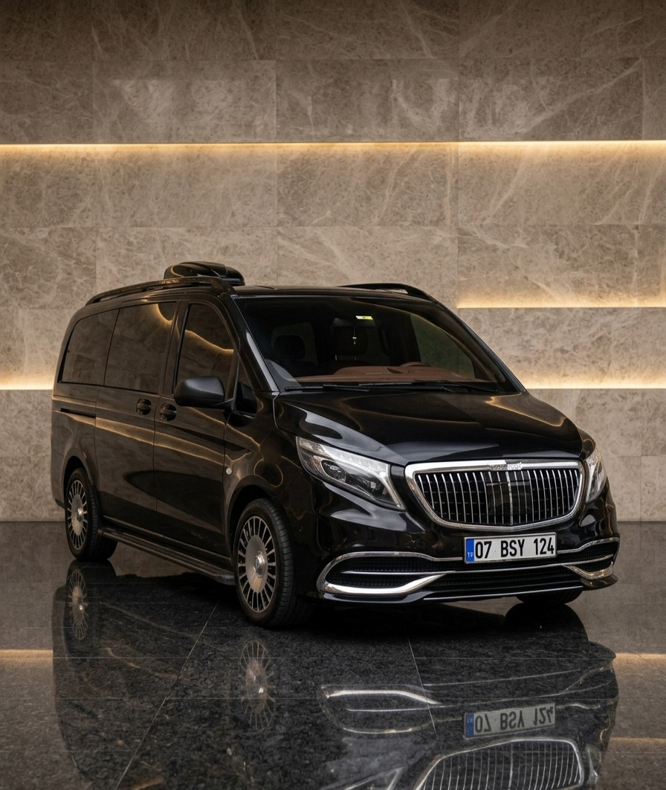
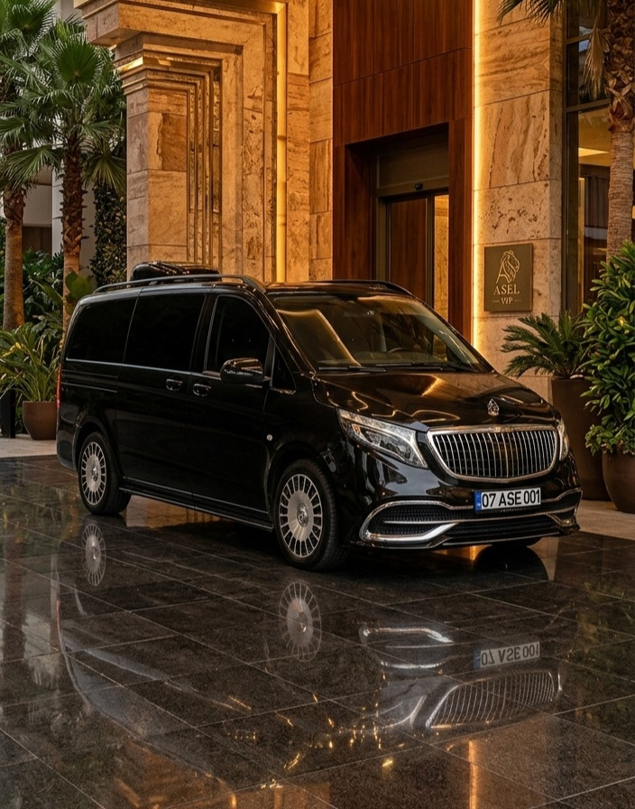

Yolcu sayınıza ve beklentinize uygun araç seçimi.

1–8 yolcu, klima, geniş bagaj, konforlu koltuklar.

Premium iç tasarım, ambiyans aydınlatması, yüksek konfor.
9–16 yolcu ve yüksek bagaj kapasitesi için grup çözümü.